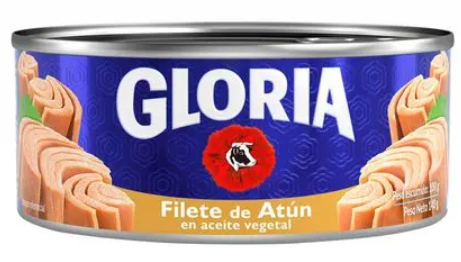

Realiza tu Donación
Zonas que Necesitan Ayuda Urgente
Estas zonas no han recibido donaciones recientemente y requieren apoyo prioritario
Alta prioridad

Zona 1 - Canto Grande
ltima donación: hace 5 d铆as
Alta prioridad
Zona 4 - Las Flores
ltima donación: hace 7 d铆as
Alta prioridad

Zona 6 - Bayóvar
ltima donación: hace 6 d铆as
Realiza tu Donación
Selecciona la zona, asociación y productos a donar
Selecciona la Zona
Alta Prioridad
Zona 1 - Canto Grande
ltima donación: hace 5 d铆as
Alta Prioridad
Zona 2 - Zárate
ltima donación: hace 2 d铆as
Baja Prioridad

Zona 3 - Canto Rey
ltima donación: hace 3 d铆as
Baja Prioridad
Zona 4 - Las Flores
ltima donación: hace 7 d铆as
Alta Prioridad
Zona 5 - Mariscal Cáceres
ltima donación: hace 1 d铆a
Baja Prioridad
Zona 6 - Bayóvar
ltima donación: hace 6 d铆as
Selecciona la Asociación
Vaso de Leche Las Flores
Vaso de LechePrograma de nutrición infantil que beneficia a familias de Las Flores.
Comedor Popular Las Flores
Comedor PopularComedor comunitario gestionado por madres organizadas del barrio.
Información de Donación
Quedan 62 productos disponibles para alcanzar la meta de esta asociación.
Selecciona los Productos
Arroz
AbarrotesS/ 3.50
por kg
Máx: 3
Fideos
AbarrotesS/ 2.80
por kg
Máx: 3
Aceite Vegetal
AbarrotesS/ 9.50
por litro
Máx: 3
Menestras
AbarrotesS/ 6.00
por kg
Máx: 3
Pollo
CarnesS/ 8.50
por kg
Máx: 3

Conservas de Atún
ConservasS/ 4.20
por lata
Máx: 3